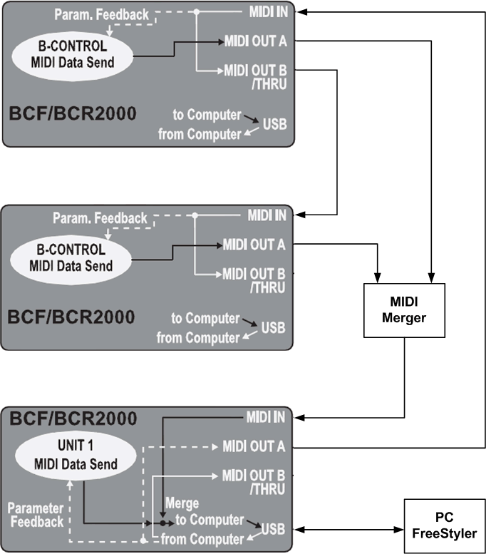
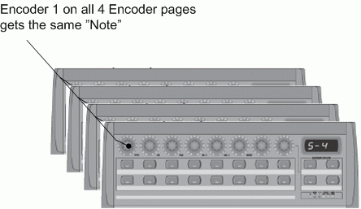
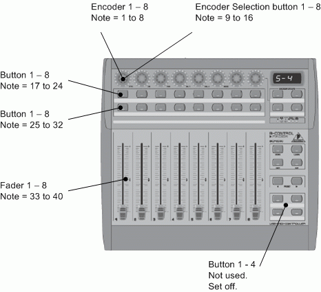
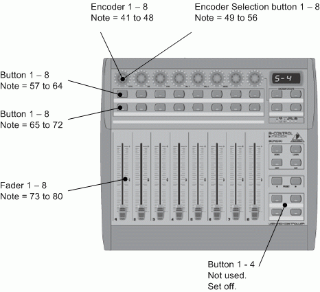
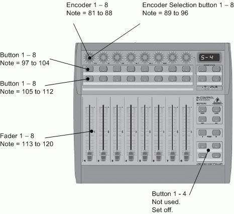
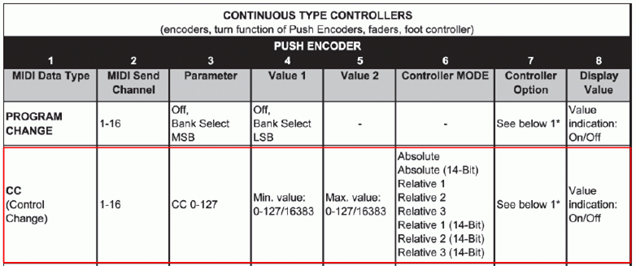
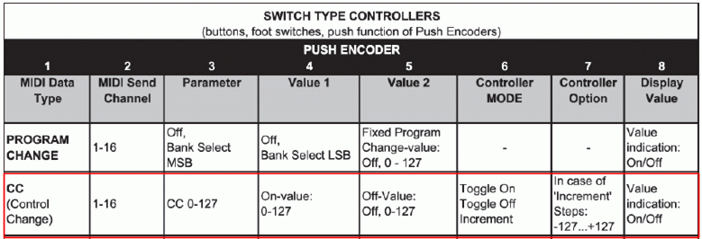

Table of Contents
3 x BCF2000 tutorial.
Pic of 3 x BCF2000 This is used until I / We find a better one.

FreeStyler can handle 1 midi channel with 127+0 notes.
These notes are used to interconnect hw. Faders, encoders and buttons to FreeStyler commands.
The hw. comes in many shapes and complexities and in this example BCF2000 is chosen because it has some motorized faders that makes a nice way for FreeStyler to update the fader positions when these are changed by other interfaces.
The BCF can be configured quit complex because it has 8 encoders with build in selection press button that can be mapped to 4 pages.
If a single BCF is used this can be handy but in this example where 3 BCFs are used it will be too complex to operate when 4 encoder pages are mixed with 5 FreeStyler midi pages.
Additional there are only 127 notes available and one BFC full configured uses 104 notes.
So therefore are each encoder and buttons only defined with one note but copied with the same note for all 4 encoder page.
This gives that the same note will be send if the page by accident is shifted.
Connecting 3 BCF2000 to FreeStyler can be done in more ways. One way could be using midiox to merge and split the midi signals. Link to Midi-ox Setup
Her a solution with extern hw. is used because this don’t uses resources from the PC. In FreeStyler much effort is put into reduce the processor load so it can run on almost all PCs and this extern merger solution is full in-line with this basic idea.
This example gives only the hw setup.
To work with FreeStyler each note and External Midi Command must be patched.
This is done in the “Setup” → “FreeStyler Setup” → “External Control” → “Midi Conrtol”
See Link Midi Interface
HW wiring
BCF2000 can be configured to use an usb interface which are used in this example as master BCF. Additional the master BCF can interact with an additional standalone BCF. Here 2 standalone BCFs are used in combination with midi merger.

{kind=link}
Midi Merger
The Midi Merger is simply a device that combine two midi signals without destroying signal from the two controllers.
{kind=link}
Setup of the BCF2000
The 3 BCF are configure with 40 notes to each. This give 120 notes in total.
There are then 7 + 0 that can be used for something else.
Encoder Pages
As mentioned above the BCF have 4 encoder pages the can be shifted. On each page the encoder and the select press button that are build in the encoder, has a unique note.
This is indicated on the figure bellow where encoder 1, 9, 17 and 25 is the same physical encode but with the page selection the note mapping gives it 4 unique notes.
In this example the page selection is unwanted and to avoid errors when someone by accident select an other page all pages are given the same notes.
Example: Encode 1, 9, 17 and 25 gets the same note, 41. when encoder 1 is used then it doesn’t matter what encoder page it is on because it will always send note 41.
This is the same for the build in selection button. It is also on all 4 pages.

Note: If you use “BC manager” to patch you bcf you can also Disable the Encoder pages so you can never accidently press the wrong Encoder page.
{kind=link}
Note Setting for the 3 BCFs
The 3 BCF2000 are configured as shown bellow.
BCF1

BCF2

BCF3

Here you can find more examples:
3xBCF Example
{kind=link}
{kind=link}
{kind=link}
Manual Note setup of BCF2000
{kind=link}
Mode Setup.
BCF no 1, is set to S4 mode.
BCF no 2, is set to S4 mode.
BCF no 3, is Set to U4 mode.
The mode is set by press “Edit” and hold it pressed while pressing “Store”
It is now possible to shift mode with encoder no. 1.
Press “Exit” to leave edit mode and store the selection.
Link Using Behringer BCF2000
Note Configuration direct via BCF.
This may look like an extreme task but it is actually quit easy and it is a fine exercise, so when the BC_edit is not available or some modification are to be done when in last minute, this will be basic knowledge.
The notes for each BCF can be found above. See Link to Note Setting for the 3 BCFs
- 1. Press “Edit” and hold the key pressed.
- 2. Move the Encoder, Fader or press the button that are to be edit and release the “Edit” button.
- 3. Turn the encoder no. 3, “PAR” to change the Note no.
Remember that the Encoders has 4 pages that can be set on the “Encoder Groups” button. On each page the encoder has a unique Note no.
Additional the encoder has a push button and this is also with a unique note no. for each page.
There are more parameters that can be set for each control. See Bellow.
- 4. Repeat 1 to 3 until all faders, encoders and buttons are changed.
- 5. Press “Exit” to exit the edit mode.
- 6. The change are now in the flash which means that it will disappear when the device is switched off. To store the changes press “Store” change the preset register no with the “Preset” keys is wanted. And press “Store” again to store the changes.
Midi Commands
The BCF2000 can be set to different sets of commands. In FreeStyler the CC (Control Change) is used. This and all the parameters related can be set with the 8 encoders in Edit mode.
Bellow is a short list of the setting but in general see the user manual for BCF2000.
Encoder 1:
Midi Data Type. Default is CC which is also the type FreeStyler uses. The Control can also be switched on and off here. (It is used above, on the 4 buttons that are switched off)
Encoder 2:
Midi Channel. FreeStyler don’t use channel information. Default is 1.
Encoder 3:
Parameter. This is the note no. and this are to be unique for each control.
Encoder 4:
Value 1 is the min value / off value. Default is 127
Encoder 5:
Value 2 is the Max value / on value. Default is 0
Encoder 6:
Controller mode. This parameter contains the information of the values send. If it is Absolute or relative values and if it is the extender 14 bits that are send. Default is Absolute which is also what FreeStyler uses.
In case of buttons this parameter is used to define if it is a toggle or a flash button. It can also be set to an increment button.
FreeStyler will normally run with flash buttons and toggle button functions are generated by Freestyler. Therefore Default set the buttons to flash.
See Bellow for hint on buttons.
Encoder 7:
Options. For encoder is this parameter how the LED ring behaves.
For Faders it is how the fade and motor interact.
For Buttons the parameter sets the step size when the button is used in increment mode.
Encoder 8:
Display Value is used to set if the value send shall be displayed in the small display in upper left corner.
Fader Table

Button Table

Hints on buttons.
Buttons can be configured to 3 modes. See bellow.
Toggle.
This is “Toggle On” mode and means that it keeps it value as until it is depressed again.
Like a light switch. Switch on, stays on until it is switched off again.
Flash.
This is “Toggle Off” mode and means that it keeps it’s value as long as it depressed. This is like a doorbell. It is only ringing as long as the button is depressed.
Increment.
In this mode each press will increment the value send with the note. The size of the increment can be set on the encoder for controller option. (Encoder 7)
{kind=link}
{kind=link}